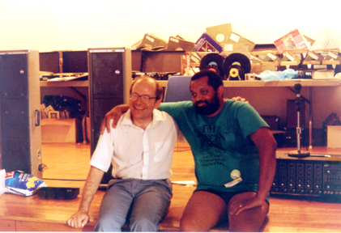

|
|
|
Paul Collins - Chicago,
Illinois
The news stopped me in my tracks. I was on my way to dancing when I got a voice message on my pager from my friend, Gerhard Bernhard. I knew that Gerhard wouldn't page me this late in the evening unless it were something we needed to discuss right away. I listened to Gerhard's message several times before calling him back. I spent the next half hour sitting in my car thnking about the times Larry and I had spent together and about the times that we hadn't. Larry had been on my mind earlier in the day. I recalled our parting after the Door County Folk Festival, a scant three weeks before, and our promise to get together and do a "dance exchange", this fall, with dinner. This was something we had done about twenty-five years ago when we both lived in the Hyde Park neighborhood in Chicago. We talked about doing other things too. But we always came back to the dance exchange - where we shared some dances with each other and prepared dinner - a rabbit & rice dish from a Mexican recipe book of mine. We always came back to that event and we wanted to do it again. 
My last words to Larry in Door County were, "I'll see you this summer sometime at dancing in Wauwautosa, if not sooner." (the Milwaukee Tuesday Night Dance Group). I guess I'll have to wait a while for that. On Wednesday and Thursday, I had worked with a client who had employees from France come to Chicago for a two-day meeting. One of them had been sitting on a plane on the runway at the Orly Airport when the pilot suggested that they could get a look at the Concorde taxiing down the runway in preparation for take off. She had no idea why her plane was delayed on the runway for two hours. Upon landing at O'Hare, she was finally informed about the Concorde crash. During lunch and dinner breaks, the conversation often turned toward the relative safety of air travel as compared with automobile travel. Sometime between 1:00pm and 1:15pm on Thursday, as we returned from lunch the conversation shifted toward Wisconsin and for some reason I made a remark about living in Milwaukee. A clear image of Larry flashed across my mind during that brief conversation. The automobile accident happened about 8:00pm in France, which would be about 1:00pm in Chicago. Did we connect one more time or was it a coincidence? Most people would say that men do not really get close to each other. My closest friends, Andrew Greenberg, and David Hart, moved away from Chicago years ago, but we are still close - closer than most men. We get together when we can, email when we can and talk on the phone when we can. I have always considered Larry a good friend - not my closest friend - but a good friend. Larry and I have known each other since the early 1970's when he noved to Chicago. There was a unique quality about my friendship with Larry that I did not have with either Andrew or David. I do have something that comes close with my friend Dennis Rigan, but it's not as intense as with Larry. I'd say that for the last dozen or more years, whenever Larry were at the same event we first made eye contact, then we both broke into big smiles - knowing smiles - knowing that we were going to have a great time together. This happened both at dance and non-dance events. We never discussed it with each other - it just happened. At dance events, we'd usually be the last ones to leave the dance hall, staying up late to listen to music or to do old dances that not too many other folks knew or to try to reconstruct dances that neither of us could remember. I remember a conversation Larry and I had one summer at the Sister Bay Village Hall. We were lamenting the fact that we didn't see any younger people in the international folk dance movement following in our footsteps or coming close to us in terms of their intensity, spirituality, enjoyment, knowledge, dedication, etc. Later that evening, during the Folk Dance Olympics - a not-so-competitive "competition" that we added to as a late night activity to the Door County Folk Festival. From out of the kitchen, right under our noses danced Karla Smith and Liz Amos. As Larry put it, "They are the closest thing to the old intensity, spirit, dedication, etc. that I've seen in years!". Karla and Liz were extremely close. However, only close enough to finish a strong second in the voting for Olympic Champion. Incidentally, a strong second is the closest that anyone has ever been able to come to defeating Larry and me in the Olympics. Someone in Milwaukee once told me that after Larry and I had done some "hotshot" dance at a Milwaukee Folk Fair after party, they had overheard someone describing us as "twins separated at birth". We were a tough act to top. Larry contributed immensely to the spirit and the success of the Door County Folk Festival which has evolved over the years from the early days of searching for an identity and an audience to the the present days of building and maintaining a community and trying to understand how to serve that community better. I was flattered and pleased when Larry talked about how much he enjoyed the camaradarie and atmosphere at the Festival. He tried to plan his annual European trips so that he would be able to attend the Festival and told me that he always planned to attend even if he were not on the teaching staff. Larry touched all of us in many other ways including his virtuosity on the piano - concert-quality; his interst in history, politics, folk culture, fine art, literature and the humanities; his interest in photography and his passion for art history. I hope that someone will publish Larry's book. He had worked on it so dilliligently. Small wonder that in the late 1980's Larry seriously considered a career in the diplomatic service. This past Sunday, I attended the memorial service for the father of a friend of my wife's. Two thoughts from this service that rang true were: The first friend that I told about Larry's death reminded me that events like this should reinforce the need for us all to focus on the good things in life, to live each day to its fullest, to focus on things that can really make a positive difference and to avoid things are negative and/or stressful. Hey, that sounds a lot like the way Larry tried to lead his life. From Chris Keller to Paul Collins: This One's for You, Paul I love the dark hours of my being.
Then the knowing comes: I can open
So I am sometimes like a tree
A dream once lost
Rainer Maria Rilke Paul Collins - Chicago,
Illinois
|
|
|